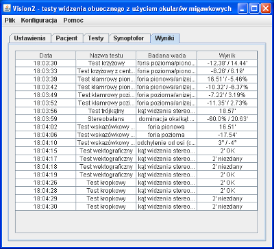

Zakładka "Wyniki"
Zakładka "Wyniki" (rys. 1) umożliwia przeglądanie wyników badań. Są one prezentowane w kolejności chronologicznej w tabeli podzielonej na 4 kolumny:
- Data: Data i godzina wykonania testu. Jeżeli test wykonywany był tego samego dnia wyświetlana jest sama godzina.
- Nazwa testu: Nazwa przeprowadzonego testu, np. "Test krzyżowy" lub "Test krzyżowy z centralnym bodźcem".
- Badana wada: Opis badanej wady, np. "foria pozioma/pionowa". Jeżeli test mierzy jednocześnie dwie wady, są one rozdzielone ukośnikiem.
- Wynik: Wynik uzyskany w teście, np. "-12.38'/14.44'". Apostrof przy wyniku oznacza, że wynik podany jest w minutach kątowych. Jeżeli test umożliwia pomiar dwóch wad jednocześnie, podane będą dwie wartości rozdzielone ukośnikiem. Kolejność odpowiada opisowi w polu "Badana wada".

Rys.1 Zakładka prezentująca wyniki badania